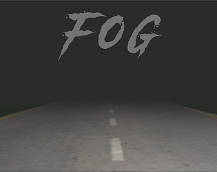

Lessons Learned
- Mistakes and imperfections can lead to fun and interesting outcomes, so don't be afraid to make them
- Small wins are still wins
- Don't reinvent the wheel unless your goal is to make a really cool new wheel
---
I didn't have much for these games as they were mainly prototypes, but I wanted to discuss them because a lot of times we forget to appreciate these things and what we've gained from them.
Speedrunner
An admittedly fun 2D platformer where the player's goal was to make it to the end as fast as possible. By the end of development I had added in 3 characters with abilities that changed the pathing you'd take in each level. My favorite of the three was the grappling hook guy. I mean, come on—it's a fast-paced platformer with a grappling hook! The other 2 featured a dash and a double jump.Speedrunner made it fairly far into development, but I still didn't fully understand how rigidbodies and colliders in Unity worked. I've since learned that the "continuous" simulation option on rigidbodies helps a lot for fixing things getting stuck in one another. Luckily the "charm" of the game that kept my friends and I playing was partly because of the buggy colliders. It was just reliable enough when you hit the moving platforms that you felt like you could "master the jank" and it kept you trying over and over again. Mistakes and imperfections can lead to fun and interesting outcomes, so don't be afraid to make them.
Fog - itch.io page
WARNING: I still hadn't learned I need a 'Quit' button; Alt+f4 instead
I am incredibly proud of this one. I used free assets from online and it was simple gameplay, but not only did I stick to my original design with little to no scope creep, I posted it online! It was an awesome feeling knowing other people could play something I made. During development of this I leared how to use lighting, import models, animate, and upload a game to itch.io (An open marketplace for independent digital creators). Small wins are still wins!

itch.io cover photo
Curious Caveman
This game was about a caveman who was enamered with fire, but would get distracted and wander from his home. The player would use a torch to help the caveman navigate treacherous environments. It was a cute little puzzle game prototype that didn't make it through because my laptop was having a tough time running my less than perfect pathfinding. Looking back with a much smaller ego I should have opted to use Unity's built in navmesh system. Unfortunately, I was still in the "if I don't code it myself it's cheating" portion of my journey but I now know don't reinvent the wheel unless your goal is to make a really cool new wheel... mine was not. On the bright side I learned a lot about colliders, pathfinding, and 3D modeling during this project!Shoot 'em - itch.io page
WARNING: I still hadn't learned I need a 'Quit' button; Alt+f4 instead
My second game ever uploaded to the internet! It's an arcade style survivor game I made while learning about the Unity particle system and 2D games. There's not much to say about this other than I went into it wanting to make a small and simple game and that's what I got so I was very happy with it.
itch.io cover photo